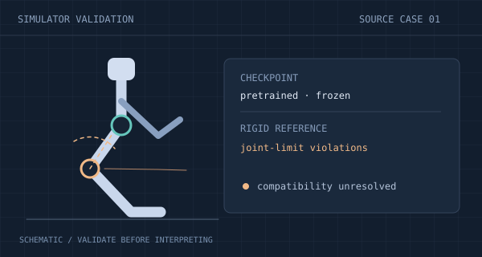
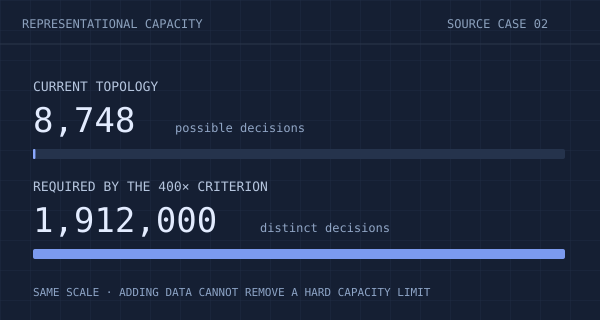
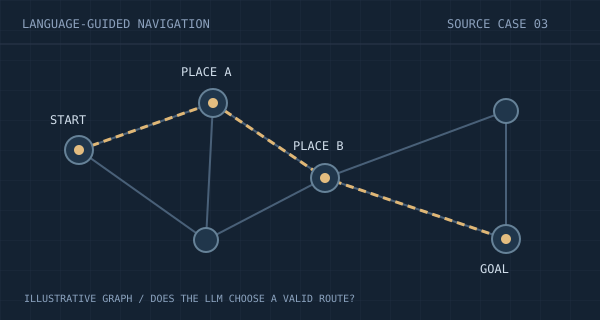

Grounded in research
Questions come from recorded projects and the moments when a human researcher intervened. Each starts from a concrete research state.
Can AI choose the next experiment?
Good research depends on what you do next. We freeze real projects at critical decisions and ask models to choose between two plans—using the evidence available at the time.
First release in preparation · Open-response extension planned

Validate the environment before explaining the result.
Explore case
Recognize when the model cannot meet the requirement.
Explore case
Keep the experiment focused on the research question.
Explore caseIllustrated summaries of source cases. Full evaluation items include the frozen project.
Research histories.
Human interventions.
A record to learn from.
Source corpus inventory, not the number of benchmark questions.
A program can run while the scientific reasoning goes wrong. AgonScientistBench focuses on the decisions that shape an experiment.
Questions come from recorded projects and the moments when a human researcher intervened. Each starts from a concrete research state.
Inspect the code, notes, and results. Decide which plan addresses the problem. The first edition scores a choice between two alternatives.
Reverse the option order. Test with and without the project. Examine whether a score reflects scientific context or cues in the wording.
In a case-writer selection pilot, pooled accuracy was lower with the project available than with the options alone. Explore the counts behind that observation.
20 breakpoints · 720 runs
3 case writers × 3 answerers
2 option orders × 2 evaluation arms
| Answering model | Accuracy │ 50% chance | Correct / runs |
|---|---|---|
| Ggpt-6-astra | 49.2% | 59 / 120 |
| Cclaude-opus-5 | 32.5% | 39 / 120 |
| Xgrok-4.6 | 26.7% | 32 / 120 |
With project · all case writers · pooled accuracy 36.1% (130 / 360).
Download CSVAll runs used medium reasoning effort. Shared breakpoints and repeated option orders mean runs are not independent. Options-only scores can reflect writing cues; this pilot evaluates case quality as well as model behavior.
Data & protocol notesRead the situation, weigh the two plans, then reveal the reference reasoning. These examples are condensed from real two-choice source cases.
A pretrained robot policy shows joint-limit violations in a new MuJoCo simulator. The project is still validating the environment, including its rigid reference. An early comparison has only eight qualified poses.
The complete task includes the project snapshot. This shortened example is for exploring the question format.
Agon supplies the histories. Models are evaluated on their choices at a frozen point in those histories.
Identify a human intervention in a recorded Scientist research workflow.
Preserve the code, notes, and evidence available before the correction.
Construct alternatives from the original direction and the recorded correction.
Score against the case label in both option orders, with an options-only control.
Project files, existing results, research context, and the two candidate plans.
The reference label, human correction, subsequent work, and case-construction notes.
The first two-choice edition is in preparation. This site currently provides illustrative questions and aggregate counts from the case-writer pilot. The frozen dataset, evaluation harness, and final results are not yet published here. Follow the public project repository for release updates.
Agon is the research system that produced the source histories. Its Scientist role interprets evidence and plans experiments. AgonScientistBench uses those histories to evaluate model decisions. The cases reflect this workflow and its research domains; they are not a complete measure of all scientific ability.
An intervention identifies a candidate decision for case construction. The reference plan is explained against that case’s objective and recorded evidence. It should not be interpreted as a claim that every alternative research direction is invalid. The examples include source notes so readers can inspect what was condensed.
A model may identify the reference option from its wording without understanding the research. The options-only arm exposes this possibility. That is why the pilot should be read as a study of case construction as well as model behavior, rather than as a final capability ranking.
Yes, an open-response extension is planned. It will ask models to propose mechanisms, design experiments, and predict outcomes. The first edition focuses only on two-choice questions.
Explore the examples and pilot data today.
The full two-choice benchmark is in preparation.